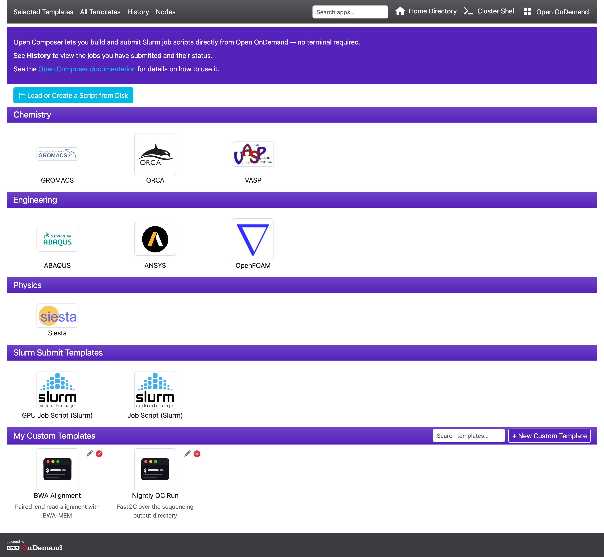
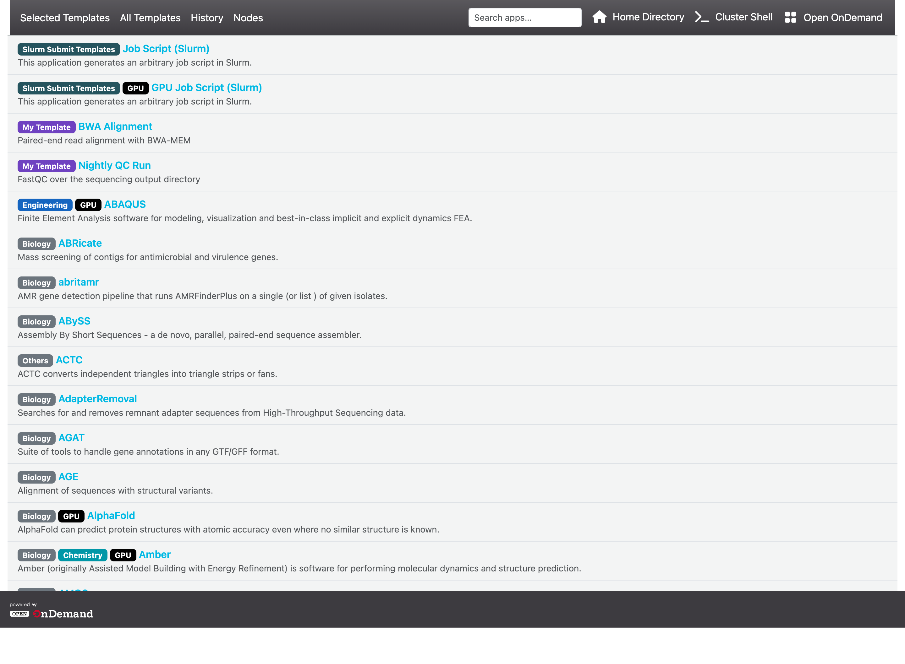
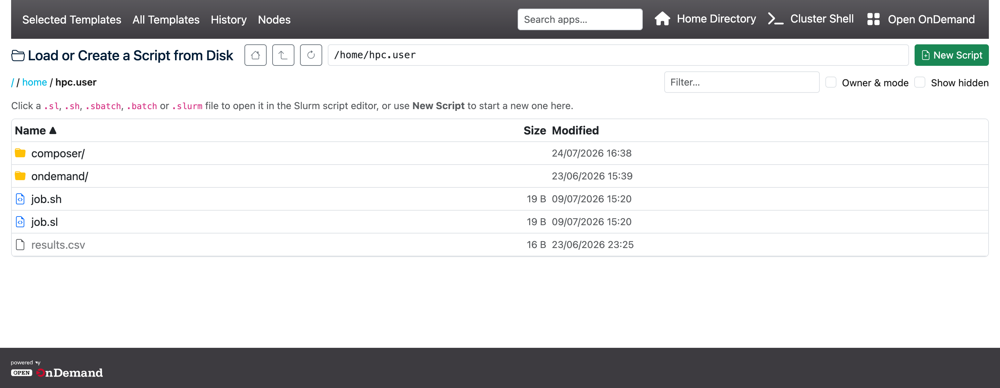
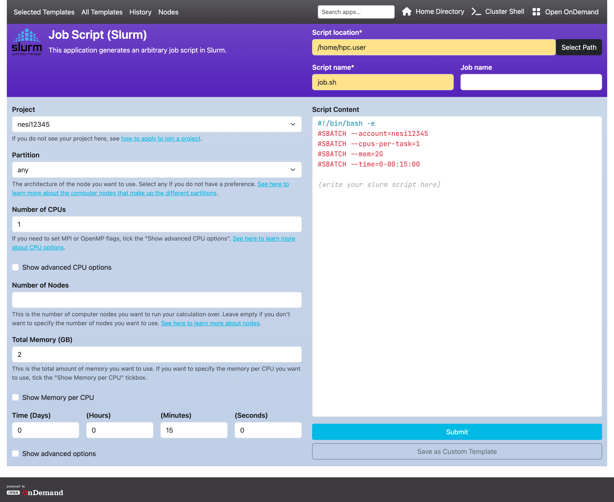
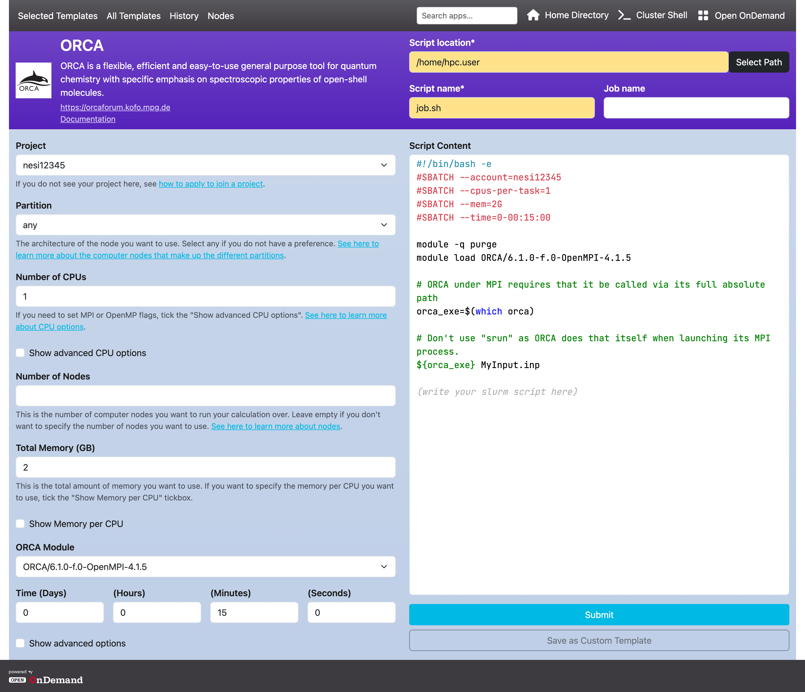
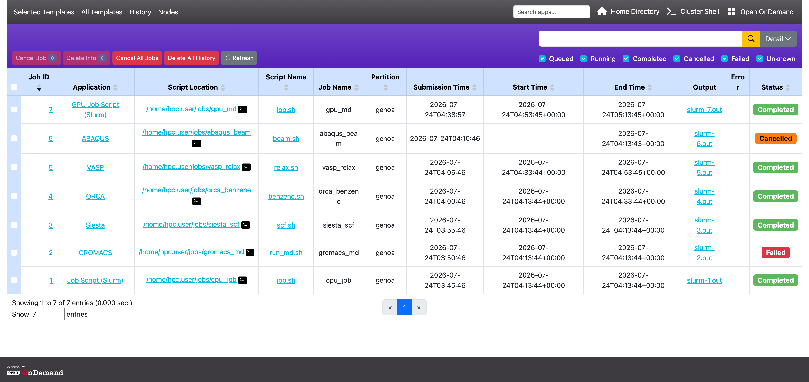
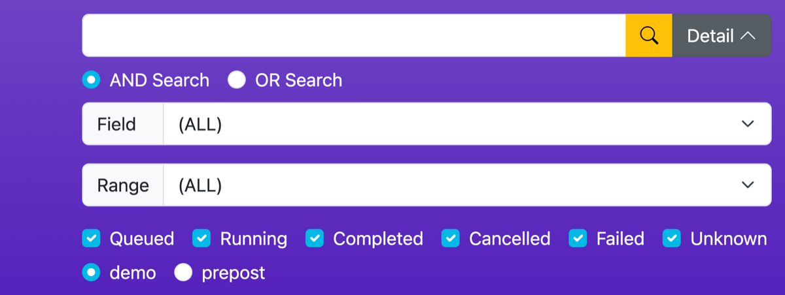
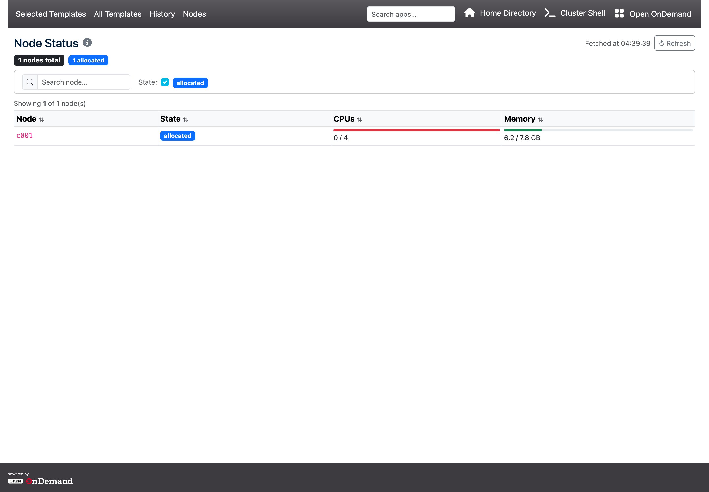

Open Composerユーザマニュアル
1. はじめに
Open ComposerはWebブラウザからHPCクラスタシステムにバッチジョブを投入することができるWebアプリケーションです。 ホームページ（「Selected Templates」）、「All Templates」ページ、「Load or Create a Script from Disk」のファイルブラウザ、テンプレート毎のアプリケーションページ、「History」ページ、「Nodes」ページから構成されています。
2. ホームページ
アプリケーションのアイコンがカテゴリ毎に表示されます。
ホームページのレイアウトは、管理者がconf.yml.erbのhome_formatで設定できます。
big（デフォルト）はアプリケーションのアイコンと名前を大きなタイルで表示し、smallはコンパクトな一覧形式で表示します。
ナビゲーションバーには以下のリンクがあります。
- 左側 — 各ページへの4つのリンクです。
- Selected Templates — 現在開いているホームページです。サイトが表示対象として選んだアプリケーションがカテゴリ毎に並び、その下に自分が保存したテンプレートが表示されます。
- All Templates — ホームページに表示されないアプリケーションも含め、すべてのテンプレートを1つのスクロールする一覧で表示します。3. 「All Templates」ページを参照してください。
- History — 自分のジョブ履歴です。6. 履歴ページを参照してください。
- Nodes — クラスタの計算ノードの現在の状態です。7. ノードページを参照してください。
navbar_logoを設定している場合、これらのリンクの手前（左上隅）にサイトのロゴが表示され、ロゴ自体がOpen OnDemandへ戻るリンクになります。show_navbar_logo: falseにすると、navbar_logoの値を消さずにロゴだけを非表示にできます。Open OnDemandに埋め込んで動作させる場合は、Open OnDemand側のナビゲーションバーがすでにサイトのロゴを表示しているため、通常はロゴを表示しません。 - 検索ボックス — ナビゲーションバーの右側、残りのリンクの手前にあります。
- ホームページに表示されていないものを含むすべてのアプリケーションと、自分が保存したテンプレートを検索します。名前、いずれかのカテゴリ、説明のいずれかに、大文字と小文字を区別せずに部分一致すれば該当します。
- 一致したものはナビゲーションバーの直下に一覧表示されます。「All Templates」ページと同じカテゴリのバッジとGPUのバッジが付き、自分が保存したテンプレートには
My Templateのタグが付きます。項目をクリックすると開きます。 - ボックスに文字が入力されている間、そのページ本来のテンプレートの一覧は非表示になり、検索結果がその場所に表示されます。ボックスを空にすると、元の一覧に戻ります。
- 管理者が
conf.yml.erbでshow_search: falseを設定している場合、このボックスは表示されません。
- 右側
- Home Directory — Open OnDemandのファイルブラウザを開きます。
conf.yml.erbでshow_home_directory: falseが設定されている場合は非表示です。 - Shell Access — ログインノード上でOpen OnDemandのシェルセッションを開きます。常に単一のリンクであり、ドロップダウンにはなりません。接続先は、現在のページが対象としているクラスタに設定されたログインノードです。すなわち、履歴ページやノードページで選択したクラスタ、アプリケーションページの「Cluster name」で選択したクラスタ、いずれでもない場合は設定の先頭のクラスタになります。
show_shell_access: falseが設定されている場合は非表示です。また、対象のクラスタに管理者がログインノードを設定していない場合も、接続先が存在しないため非表示になります。ラベルとアイコンはshell_access_labelとshell_access_iconで設定されるため、サイトによって名称が変更されている場合があります。 - Open OnDemand — Open OnDemandのダッシュボードへ戻るリンクです。
show_open_ondemand: falseが設定されている場合は非表示です。ラベルはopen_ondemand_labelで設定します。URLは同じホスト上のダッシュボードが既定値であり、ダッシュボードが別の場所にある場合にのみopen_ondemand_urlを設定します。
- Home Directory — Open OnDemandのファイルブラウザを開きます。

2.1. マイカスタムテンプレート
「My Custom Templates」の区画は、アプリケーションのカテゴリの下に表示されます。 保存したテンプレートが、作成元のアプリケーションと同じアイコンのサムネイルで表示されます。
- テンプレートのサムネイルをクリックすると、作成元のアプリケーションページが、フォームの値がすべて入力された状態で開きます。
- 区画のヘッダにある「+ New Custom Template」ボタンをクリックすると、「New Custom Template — Choose a Style」の選択ページが開き、新しいテンプレートの出発点となるアプリケーションを任意に選択できます。
- テンプレート上の鉛筆のアイコンをクリックすると、ホームページから離れずに名前や説明を変更できます。
- テンプレート上の×のアイコンをクリックすると削除できます（確認のダイアログが表示されます）。
テンプレートはユーザ毎にdata_dir/templates/以下に保存されます。
テンプレートがまだ1つも保存されていない場合は、作成方法を説明する短い案内が表示されます。
テンプレートを1つ以上保存すると、区画のヘッダに「Search templates…」ボックスが表示されます。 入力に応じてテンプレートの名前と説明でタイルを絞り込み、一致するものがない場合は「No templates match your search.」と表示します。 このボックスはこの区画のみに作用します。ナビゲーションバーの検索ボックスは全体を対象とします。
タイルはドラッグして任意の位置にドロップすることで並べ替えることもできます。 新しい並び順は自動的に保存され、以降この区画を表示する際に常に使用されます。 以下の点に注意してください。
- 区画の検索ボックスに文字が入力されている間はドラッグできません。先にボックスを空にしてから並べ替えてください。
- Escキーを押す、またはグリッドの外にタイルをドロップすると、移動を取り消せます。直前の並び順に戻ります。
- ドラッグしても並び順が変わらなかった場合は、何も保存されません。
- 保存に失敗した場合（例えばセッションの有効期限が切れた場合）は、直前の並び順に戻り、ページを再読み込みして再試行するよう促すメッセージが表示されます。
- 一度もドラッグしていないテンプレートは、位置を指定したテンプレートより後ろに、名前のアルファベット順で並びます。そのため、保存した直後のテンプレートは、どこかにドラッグするまで区画の末尾に表示されます。
3. 「All Templates」ページ
ナビゲーションバーの「All Templates」をクリックすると、すべてのテンプレートが、アイコンのタイルではなく、ページの高さいっぱいの1つのスクロールする一覧として表示されます。 この一覧は絞り込まれていないため、ホームページで見つけられないものを探す場所になります。 ホームページのカテゴリには決して表示されない、サイトが非表示に設定したアプリケーションも含まれます。

一覧は次の順序で3つのグループに分かれています。
- サイトが特集しているジョブスクリプトのテンプレート（管理者が特集に指定したカテゴリのアプリケーション）。
- 自分が保存したカスタムテンプレート。
- その他すべてのアプリケーション（名前のアルファベット順）。
各行にはテンプレートの名前とその下に説明が表示され、その手前にバッジが付きます。
- アプリケーションが属するカテゴリ毎に1つのバッジが付きます。色はカテゴリ毎に管理者が設定します。色が設定されていないカテゴリは灰色になります。
- GPUアプリケーションには黒い
GPUのバッジが付きます。 - 自分が保存したテンプレートには紫の
My Templateのバッジが付きます。
行をクリックすると、そのアプリケーションのページが開きます。自分のテンプレートをクリックすると、保存した値が入力された状態でアプリケーションページが開きます。 ナビゲーションバーの検索ボックスに入力すると、この一覧は一致した項目に置き換わります。 ページの下部に、サイト独自の短い注記が表示される場合があります。
4. ディスクからのスクリプトの読み込みと新規作成
すでにクラスタ上にジョブスクリプトがある場合は、フォームで作り直すのではなく、そのままOpen Composerで開くことができます。
「Load or Create a Script from Disk」ボタンは、ホームページのアプリケーションのカテゴリの上にあり、「New Custom Template — Choose a Style」ページの上部にもあります。
ラベルは管理者が変更できます（load_script_label）。show_load_script: falseが設定されている場合、このボタンは表示されません。

このボタンは、ホームディレクトリから始まる全画面のファイルブラウザを開きます。操作部は次のとおりです。
- ホームディレクトリへ移動するボタン、親ディレクトリへ移動するボタン、現在のディレクトリを再読み込みするボタン。
- パスの入力欄。ディレクトリのパスを入力してEnterキーを押すと、そこへ移動します。
- 現在のパスのパンくずリスト。任意の部分をクリックすると、そこへ移動します。
- 入力した文字を含む名前だけに一覧を絞り込む「Filter」ボックス。
- 2つの列を追加する「Owner & mode」チェックボックスと、ドットで始まる名前を含める「Show hidden」チェックボックス。
- 並べ替えが可能な「Name」「Size」「Modified」「Owner」の列見出し。有効になっている見出しを再度クリックすると、順序が反転します。ディレクトリは常にファイルより前に並びます。
現在のディレクトリはページのアドレスに保持されるため、ブラウザの「戻る」と「進む」で訪問したディレクトリを辿ることができ、再読み込みしても同じ場所に留まります。
- ディレクトリの行をクリックすると開きます。
.sl、.sh、.sbatch、.batch、.slurm、.bashで終わるファイルを開くことができます。- それ以外のファイルは灰色で表示され、クリックできません。
- スクリプトをクリックすると、ディスクから読み込んで汎用のジョブスクリプトのページで開きます。ファイルの内容がスクリプトのエディタに入り、「Script location」と「Script name」がそのファイルのパスから入力されます。そこからスクリプトの編集、フォームの項目の変更、ジョブの投入が可能です。
- ファイルは先頭の1 MBのみ読み込まれます。それより大きいファイルでは切り詰められた旨の警告が表示され、読み込まれるのは切り詰められたテキストです。そのまま投入しないでください。
緑色の「New Script」ボタンは、既存のスクリプトを開くのではなく、新しいスクリプトの作成を開始します。 非表示のものも含むすべてのアプリケーションの一覧（特集されているテンプレートが先頭）が開き、閲覧していたディレクトリが引き継がれます。 そのため、選択したアプリケーションページは「Script location」がそのディレクトリに設定された状態で開きます。
5. アプリケーションページ
ジョブスクリプトを生成します。ページ左のWebフォームに値を入力すると、ページ右のテキストエリアにジョブスクリプトが動的に生成されます。テキストエリアは自由に編集できます。テキストエリアの下の「Submit」ボタンをクリックすると、生成されたジョブスクリプトがHPCクラスタに投入されます。

- ヘッダの「Script location」と「Script name」と「Job name」は、それぞれ「ジョブスクリプトの保存先ディレクトリ」と「ジョブスクリプトのファイル名」と「ジョブ名」を記述します。
- ヘッダの「Cluster name」は、
conf.yml.erbのclusters:に複数のクラスタを定義している場合のみ表示されます。それらのクラスタが同じジョブスケジューラを使用していても構いません。選択されたクラスタにジョブスクリプトが投入されます。 - Webフォームのラベルにアスタリスクがある場合、それは必須項目であることを表します。
- Webフォームの背景色が黄色は、ジョブスクリプトおよびジョブ投入前の処理を行うスクリプトを変更しないことを示します。
- Webフォームの背景色がピンクは、ジョブ投入前の処理を行うスクリプトのみを変更することを示します。
- ジョブスクリプトを手動で編集した後にフォームの項目を変更した場合、スクリプト中でその項目に対応する行のみが更新され、それ以外の手動での編集は保持されます。
- 連携は双方向です。スクリプトの領域で入力を止めてから約0.5秒後に、変更したジョブスケジューラのディレクティブの行が、対応するフォームの項目に読み戻されます。非表示または無効になっている項目は対象外のため、スクリプトを手で編集しても、折りたたまれた区画が開くことはありません。一方、ディスクや履歴ページから読み込んだスクリプトの場合は、必要な区画が開きます。
- 一部のドロップダウン（例えばSlurmのジョブスクリプトのフォームの「Project」と「Partition」）は、最後に選択した値を記憶し、次にそのアプリケーションページを開いたときに既定で選択します。記憶される値はブラウザ内にのみ保存され、保存済みのテンプレートや履歴ページからページを開いた場合は無視されます。
サイトが提供するアプリケーションは、上記の汎用のフォームより高度な場合があります。 次の例は量子化学のアプリケーションで、フォームがクラスタのモジュールシステムから利用可能なソフトウェアのバージョンを取得するため、ドロップダウンには実際にインストールされているバージョンのみが表示されます。

5.1. ジョブの投入
「Submit」をクリックすると、スクリプトをディスクに書き出し、クラスタに投入します。ページはアプリケーションページに留まり、緑色のバナーがJob IDを示して「History page」へのリンクを提供します。そのリンクを辿ると、履歴のテーブルの先頭に新しいジョブが表示されます。 サイトの設定によっては、その前に次の2つのことが起こる場合があります。
-
スクリプトにコマンドが無いという警告
スクリプトが空行、コメント、ジョブスケジューラのディレクティブ、
moduleの行のみで構成されている場合、投入する前に確認のダイアログが表示されます。 これは通常、スクリプトにコマンドを追加するためのフォームの項目が空のままであることを意味します。そのまま投入することもできますが、ジョブは実行されても何もしません。 -
SSH鍵の自動設定
ログインノードへSSHでジョブを投入するサイトでは、最初の投入時に、
~/.sshディレクトリにパスフレーズなしのSSH鍵を生成して認証に使用できるよう登録することがあります。これにより、パスワードの入力を求められずにジョブを投入できます。 公開鍵は~/.ssh/authorized_keysに追記されます。また、鍵の名前が既定のid_*ではないため、sshがその鍵を提示するように、~/.ssh/configのHost *にIdentityFileの行が追加されます。これは1度だけ行われ、通知は表示されません。すでに存在するSSH鍵が置き換えられることはありません。
5.2. カスタムテンプレートとして保存
「Save as Custom Template」ボタンは、すべてのアプリケーションページで、スクリプトの区画の下部、「Submit」ボタンの直下に表示されます。 クリックすると、テンプレートの名前と、任意で説明を入力するダイアログが開きます。 現在のフォームの値が、アプリケーションのアイコンとパスとともに、再利用可能なテンプレートとして保存されます。
- 保存したテンプレートは、ホームページの「My Custom Templates」の区画に表示されます。
- 自分が保存したテンプレートを開いた場合、このボタンはページの読み込み時から「Save as Custom Template」ではなく「Save」と表示されます。 クリックすると、そのテンプレートを現在のフォームの値で上書きします。ダイアログは表示されません。元のテンプレートを残して2つ目のテンプレートを作成するには、「+ New Custom Template」からやり直してください。
5.3. テンプレートモード
「+ New Custom Template」の選択ページから、あるいはその選択ページから開始した「Load or Create a Script from Disk」や「New Script」からアプリケーションページを開いた場合、そのページはテンプレートモードで開きます。 このときページは、ジョブを実行するためではなく、テンプレートを作成するためのものになるため、次のようになります。
- スクリプトの下の「Submit」（または「Confirm」）ボタンは表示されません。これは意図した動作であり、異常ではありません。
- 「Save as Custom Template」が、輪郭線のみの副のボタンではなく、区画の下部の主要な青いボタンになります。
ジョブを実行するには、まずテンプレートを保存してください。保存するとホームページに戻り、「My Custom Templates」に新しいテンプレートが表示されます。 そこから（または「All Templates」ページから）開くと、同じフォームが入力した値とともに再度開き、「Submit」ボタンが利用できます。 テンプレートを作成する意図がなかった場合は、選択ページからではなく、ホームページのカテゴリまたは「All Templates」ページからアプリケーションを開いてください。 これらの経路では、「Submit」がある通常のアプリケーションページが開きます。
6. 履歴ページ
これまでのジョブ履歴を閲覧できます。また、ジョブの実行状況の確認や実行中のジョブの停止が可能です。 ページはFilter、Jobs、Actions、Displayの4つの区画から構成されます。

6.1. テーブルに表示される内容
テーブルには、Open Composerから投入したジョブだけでなく、ジョブスケジューラが自分のユーザアカウントについて報告するすべてのジョブが表示されます。 Open Composerは、自身が投入したジョブについて独自の記録（アプリケーション、スクリプトの保存先、スクリプトのファイル名、およびスクリプトそのもの）を保持しており、それをジョブスケジューラのデータに結合します。 そのため、例えばターミナルなど別の方法で投入したジョブの行は、次のように異なって見えます。
- 「Application」の列は空で、リンクもありません。
- 「Script Location」の列は空のため、ファイルブラウザとターミナルのアイコンもありません。
- 「Script Name」の列には、ファイル名ではなくJobと表示されます。クリックは可能で、ダイアログを開いた時点でジョブスケジューラからバッチスクリプトを取得します。
- Job ID、Job Name、開始と終了の時刻、標準出力と標準エラーのファイル、Statusはジョブスケジューラから取得するため、すべてのジョブで表示されます。
6.2. 遡って表示される期間
既定では、ページはジョブスケジューラに7日間（当日とその前の6日間）の範囲を問い合わせます。 それより古いジョブは、範囲を広げるまで表示されません。 範囲が(ALL)の間は日付による絞り込みが一切行われないため、キューに登録されているジョブと実行中のジョブは、日付に関係なくすべて表示されます。Rangeを選択すると、その絞り込みはキューに登録されているジョブと実行中のジョブにも適用されるため、その範囲より前に投入され、長くキューに残っているジョブはテーブルから外れます。
「Detail」ボタンの下のRangeのメニューで、この範囲を変更できます。
- (ALL) — 既定値です。日付による絞り込みを一切行わないため、7日間というジョブスケジューラ側の範囲に加えて、どれだけ前に投入されたものであっても、キューに登録されているジョブと実行中のジョブをすべて残します。「Last 7 days」を選ぶと投入日でも絞り込むため、古いキューに登録されているジョブと実行中のジョブは外れます。
- Today — 当日のみです。
- Yesterday and Today — 前日と当日です。
- Last 7 days — 当日とその前の6日間です。既定で使用される範囲と同じです。
- Last 30 days — 当日とその前の29日間です。
- Custom — 「From」と「To」の日付を自分で入力します。30日より古いジョブを見る唯一の方法です。
6.3. 4つの区画
- Filter
- ジョブ履歴を条件で絞り込み、目的のジョブを検索するための機能です。
- 入力欄に文字を入力してEnterキーを押すと、その文字とテーブル内の内容が一致するジョブが表示されます。
- 一致した文字は、テーブル内で黄色く強調されます。表示されている列ではなく、そのジョブの保存されたスクリプトの中でのみ一致した場合は、代わりにその行の「Script Name」のセルが黄色い枠線で囲まれます。クリックすると「Job Script」のダイアログが開き、強調された一致箇所を確認できます。
- 「Detail」ボタンをクリックすると、「AND/OR検索」、「特定項目に限定した検索」、「時間範囲の指定」といった、より詳細な条件での検索が可能です。

- ジョブの状態を表す「Queued」「Running」「Completed」「Cancelled」「Failed」「Unknown」のチェックボックスにより、ジョブの状態でジョブの一覧を絞り込むことができます。
- 複数のジョブスケジューラを設定している場合、ジョブの状態のチェックボックスの下にラジオボタンが表示され、選択したスケジューラのジョブのみを表示できます（図では「Fugaku」と「Prepost」と表示されていますが、表示名は設定によります）。
- Jobs
- ジョブの一覧を表示する区画です。
- テーブルのヘッダにある▲と▼をクリックすると、その列をキーとしてテーブル全体が昇順または降順に並び替えられます。デフォルトはJob IDの降順です。
- 「Job ID」の項目のリンクをクリックすると、Job Detailsのダイアログが開きます。詳細はダイアログを開いた時点でジョブスケジューラから取得されるため、保存された複製ではなく最新の内容です。
- 終了したジョブ（Completed、Cancelled、Failed）では、アカウンティングの記録が表示されます。JobID、JobName、Partition、State、Submit、Start、End、Elapsed、WorkDir、Account、TotalCPU、AllocCPUS、ReqMem、ExitCode、NodeList、標準出力と標準エラーのパスなどの項目です。このうちどれが表示されるかは、サイトのジョブスケジューラが報告する内容によります。
- キューに登録されているジョブや実行中のジョブでは、代わりにジョブスケジューラの現在の記録が表示され、こちらは設定項目のより長い一覧になります。このため、稼働中のジョブと終了したジョブでは項目名が異なります。
- ダイアログの下部にあるSourceの行は開閉できます。クリックすると、Open Composerが実行した実際のコマンドを確認でき、ターミナルで自分で実行することもできます。
- 終了したジョブでは、サイトがこの機能を有効にしている場合、詳細の下にJob Efficiencyのテーブルが表示されます。まず前提となる情報としてクラスタ、コア数、ノード数を示し、続いてWall Time、CPU、Memoryを、それぞれ百分率とその算出に用いた数値で表示します。GPUを使用するジョブでは、GPU UtilizationとGPU Memoryも表示されます。GPU Memoryの百分率は、管理者が各GPUのモデルのメモリ容量を登録している必要があり、登録されていない場合は使用量のみが表示されます。そのジョブについて利用可能なアカウンティングのデータがジョブスケジューラに無い場合は、代わりに「No efficiency information available.」と表示されます。
- 百分率の読み方です。CPUは、ジョブが実際に使用したCPU時間を、実行していた時間に確保していたコアに対して比較します。Memoryはピークの使用量を要求したメモリに対して比較し、Wall Timeは実行時間を制限時間に対して比較します。百分率が低い場合は、ジョブが必要とする以上に要求していることを意味します。次回から要求を減らしてもジョブが遅くなることはなく、多くの場合は開始が早くなります。
- 「Application」の項目のリンクをクリックすると、該当アプリケーションのページが開きます。アプリケーション名の横にアイコンがある場合は、それをクリックするとOpen OnDemandのアプリケーションページを直接開きます。
- 「Script Location」の項目のリンクをクリックすると、Open OnDemandのHome Directoryが開きます。また、ターミナルアイコンをクリックすると、Terminalアプリケーションが起動します。
- 「Script Name」の項目のリンクをクリックすると、実行したジョブスクリプトが表示されます。Open Composerから投入したジョブでは、「Load script」をクリックすると、そのアプリケーション自身のページが、そのジョブのスクリプトと投入時の値を読み込んだ状態で再度開くため、調整して再投入できます。別の方法で投入したジョブには戻るべきアプリケーションページが無いため、「Load script」は汎用のジョブスクリプトのページを開き、スクリプトのテキストと「Script location」「Script name」「Job name」の項目を入力します。その横のフォームの項目は、スクリプトのジョブスケジューラのディレクティブを読み取って復元されるため、ディレクティブとして記述された設定のみが戻ります。
- Actions
- 選択したジョブに対して操作を実行するための機能です。
- テーブルの左側にあるチェックボックスで対象を選択し、選択したジョブに対する次の操作のいずれかを使用します。
- Cancel Job — 選択した、キューに登録されているジョブまたは実行中のジョブをキャンセルします。選択したジョブのうちQueuedまたはRunningのものだけが対象となり、その件数がボタンに表示されます。
- Delete Info — 選択した終了済みのジョブをテーブルから隠し、Open Composerが保存していたそれらの情報を破棄します。ジョブそのものには影響しませんが、行は戻らないため取り消せません。キューに登録されているジョブと実行中のジョブは削除できません。これらはボタンの件数から除外され、ダイアログは選択したジョブのうち何件が除外されたかを警告し、先にキャンセルするよう促します。
- Cancel All Jobs — 直近30日間で見つかった、キューに登録されているジョブと実行中のジョブのすべてをキャンセルします。キャンセルする前に確認のダイアログが表示されます。
- Delete All History — 直近30日間のすべてのジョブを、「Delete Info」と同じ方法で隠します。取り消すことはできません。キューに登録されているジョブや実行中のジョブが残っている間は実行を拒否し、稼働中のジョブの件数を示して、先にすべてキャンセルするよう促すバナーが表示されます。
- Refresh — 履歴ページを再読み込みし、最新のジョブの状態を取得します。
- 複数のジョブを同時に選択して、一括で操作を実行することも可能です。
- テーブルの一番上のチェックボックスをチェックすると、そのページに表示されているすべてのジョブを選択できます。
- 複数のジョブをキャンセルする場合、ジョブは1件ずつキャンセルされます。 ダイアログ内の進捗バーが処理済みの件数（「X / N」）を示し、Abortボタンで、処理中の1件が終わった後に停止できます。 すべてのジョブが正常にキャンセルされるとバーは緑色になり、ページが自動的に再読み込みされます。 キャンセルに失敗したものがある場合は、どのジョブがキャンセルされなかったか分かるように、それぞれのエラーが一覧表示されます。
- Display
- 表示件数やページ送りなど、一覧の表示方法を制御する機能です。
- 画面下部には、現在表示している件数、全体件数、テーブル作成に要した時間が表示されます。
- 「Show entries」に数字を入力し、Enterキーを押すと、1ページあたりに表示する件数を変更できます。
- ページ番号をクリックすることで表示するページを切り替えることができます。
- サイトの設定によっては、テーブルに追加の列が含まれる場合があります。「Job Name」「Partition」「Submission Time」「Start Time」「End Time」「Output」「Error」、さらにジョブスケジューラの生の項目が加わることもあります。期待している列が無い場合は、管理者がその列を有効にしていません。
- 「Output」と「Error」の列では、ファイル名がリンクになっています。クリックするとファイルを読み込み、ページから離れることなくダイアログで表示します。大きなファイルは先頭の1 MBのみが表示され、その旨が通知されます。
- 画面の幅が狭い場合、これらの追加の列は「Job Name」以外すべて非表示になります。ブラウザのウィンドウを広げると表示されます。
7. ノードページ
ノードページは、クラスタの計算ノードの現在の状態を表示します。 ナビゲーションバーの「Nodes」のリンクからアクセスできます。 データはページの読み込み時に1度だけ取得され、ページが自動で更新されることはありません。

- テーブルの上にあるバッジの列は、クラスタの概要です。ノードの総数に続いて、存在する状態毎の件数が表示されます。まずidle、allocated、mixed、down、drained、drainingが並び、その後にサイトが報告するその他の状態が続きます。
- テーブルには、各ノードの名前、状態、CPUの使用状況、メモリの使用状況が表示されます。CPUとメモリは、利用可能数 / 総数のラベルが付いたバーで描画され、ノードが埋まるにつれてバーの色が変わります。
- ジョブスケジューラが報告するGRES（Generic Resource）の種類毎に、列が自動的に追加されます（例えば
gpuやnvme）。 各GRESの列はサブタイプ（例えばA100、H100）毎に分けられ、利用可能数と総数を表示します。 これらの列は「Memory」の後に、アルファベット順で並びます。 - 検索ボックスは、行全体に対する単純な部分一致です。ノードの名前、状態、CPUの数、メモリの数値、および持っているGRESの種類の名前が対象となるため、
gpuと入力するとGPUノードのみが表示されます。 - 「State」のチェックボックスで、現在の状態によるノードの表示と非表示を切り替えます（例えばidle、allocated、down）。初期状態ではすべてチェックされており、クラスタに実際に存在する状態のみが選択肢として表示されます。
- 列見出しをクリックすると、その列でテーブルが並べ替えられます。再度クリックすると順序が反転します。
- テーブルの上の「Showing N of M node(s)」は、現在の検索と状態の絞り込みによって残った行数を示します。
- Refreshボタンの横の「Fetched at」は、データをクラスタから取得した時刻です。「Refresh」をクリックすると再度取得します。
- 「Node Status」の見出しの横にある情報のアイコンをクリックすると、このページの基になっている実際のコマンドを示すダイアログが開くため、ターミナルで自分で実行することもできます。
- サイトに複数のクラスタがある場合、「Refresh」の横にラジオボタンが表示されます。いずれかを選ぶと、そのクラスタでページが再読み込みされます。